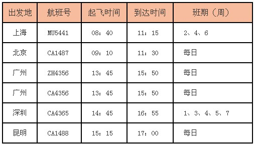
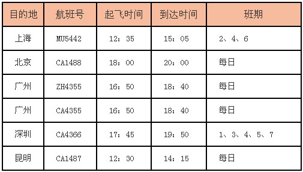
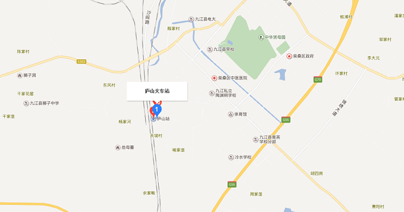
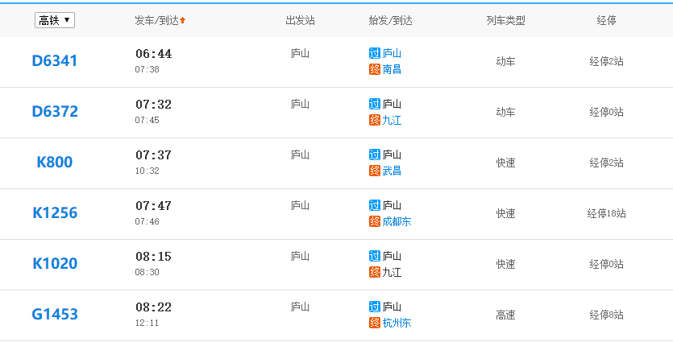
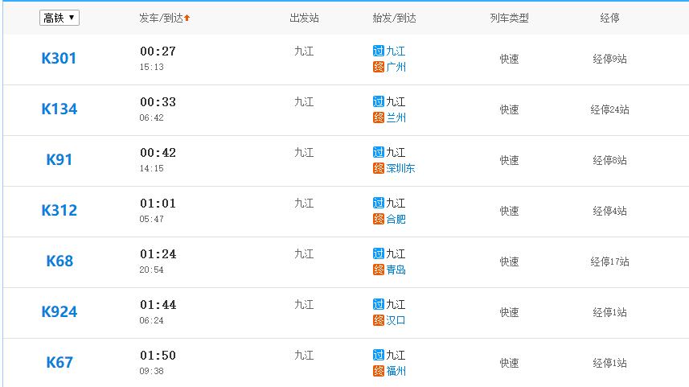
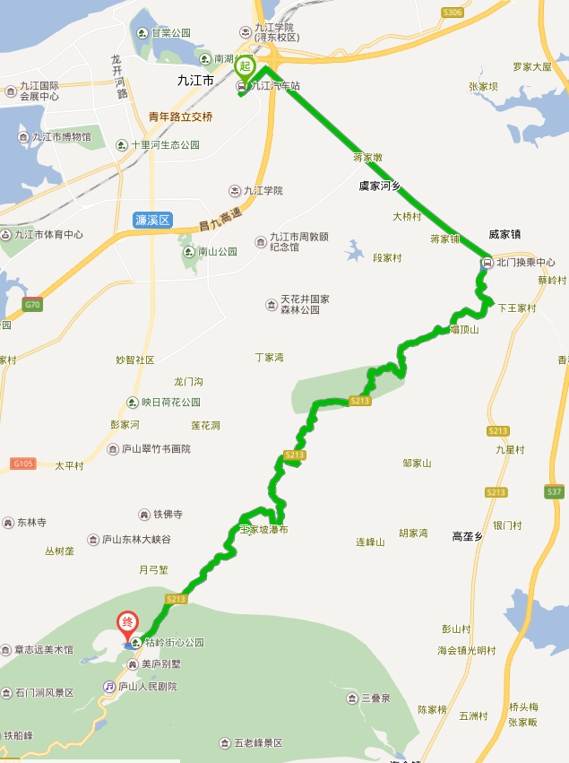

————————————
交通指南
航线与机场
庐山机场位于九江市九江县内，距离九江市50公里左右，距离庐山风景区约30公里。庐山机场较小，目前，已开通过九江至北京、上海、广州、海口、深圳、厦门等航线。机场只有2、4、6有航班。汉口到九江的航班经常是旅游旺季时复航，淡季时停开。游客也可取道南昌、武汉，再做火车或长途汽车到庐山，也较为方便。
南昌昌北国际机场（Nanchang Changbei International Airport，IATA：KHN，ICAO：ZSCN），位于中国江西省南昌市，距南昌市区约28公里，为4E级民用运输机场，是中国东方航空公司，厦门航空公司和江西航空的基地机场。
九江庐山机场，（IATA代码：JIU；ICAO代码：ZSJJ），是中国4C级机场之一、江西省五大支线机场之一，位于江西省九江市柴桑区马回岭镇机场路，庐山风景区西侧，距九江市区33公里，距庐山南山门仅9.8公里
航班时刻表

进港

离港
火车站简介
庐山周围有九江站、庐山站、南昌站等铁路始终点站，下车后均需要汽车中转抵达景区。
1.九江火车站地址：庐山区长虹大道60号交通：到达九江火车站后，建议先在战前乘坐公交17路北、23、102、104路等到【汽车总站】，然后再乘坐汽车前往庐山。
2.庐山火车站地址:庐山火车站位于九江县沙河镇，距真正的庐山还有40多公里路程。九江市九江县沙河街镇交通：到达庐山火车站后，有直接上山进景区的汽车：12元/人 ，正常情况下发车后40分钟可以到达景区门口，不过庐山站的汽车班次间隔时间久。
铁路干线
庐山站，全名九江庐山站，即九江南站，站址位于江西省九江市柴桑区沙河街镇，建于1910年，隶属南昌铁路局九江车务段管辖，现为二等站。京九铁路、武九铁路、昌九城际铁路、武九客运专线、昌九客运专线、京九客运专线都经过庐山站

火车时刻表


公路详情
九江汽车总站有发往庐山的车，票价15元，分为流水班线和定点班线两种。九江长途汽车站地址：九江市浔阳区浔南大道99号客服电话：0792-8392222交通：市内可乘坐102、104、107、4、13、15、17、29路公交到【长途汽车站】。如何抵达庐山：票价15元。有两种发车方式，一种是流水班线，车来了座满了就走，从6:30-17:30；另一种是定点班线，共8班，7:50 -16:30。行程约一小时，终点为【牯岭镇】。

班车
庐山上在牯岭镇有开往各景点的旅游观光车，分为东线和西线。1）东线运管所、美庐、十五号桥、庐山会议旧址、芦林大桥（博物馆）、芦林停车场、仰天坪路口、含鄱口、植物园、五老峰、三叠泉；2）西线会议中心、正街、环山路口、花径路口、花径、仙人洞、大天池、电站大坝【票价】七天内乘坐有效：票价80元/人。一个月内乘坐有效：票价150元/人。1米2以下儿童免票，持有国家导游证人员及旅行社经理人免票。【运行时间】旺季（4月1日-11月30日）7:00—19:00。淡季（12月1日-3月31日）7:00—18:30。【购票地点】南山园门、北山园门、运管所站Tips：班车有时需长时间等候，如若前往某景点，可提前与司机确认并登记信息，班车会准时过去接站。
索道
想体验索道的可使用此方式 大口索道50元。星龙索道30元（单线）。秀峰索道40元。三叠泉上行索道35元、下行索道55元，全程票80元。
出租车
庐山的出租车一般不打表，对当地人起步价5元，对游客10元，事先要了解行程的大致距离以便讲价。庐山启用南门、北门换乘中心，进山的外界出租车、自驾车均需交纳45元停车费方可通行。因此打车上山需要交纳额外的45元，九江部分出租车司机以10元/人到庐山招揽乘客，实际上只送到北门换乘中心，不建议。